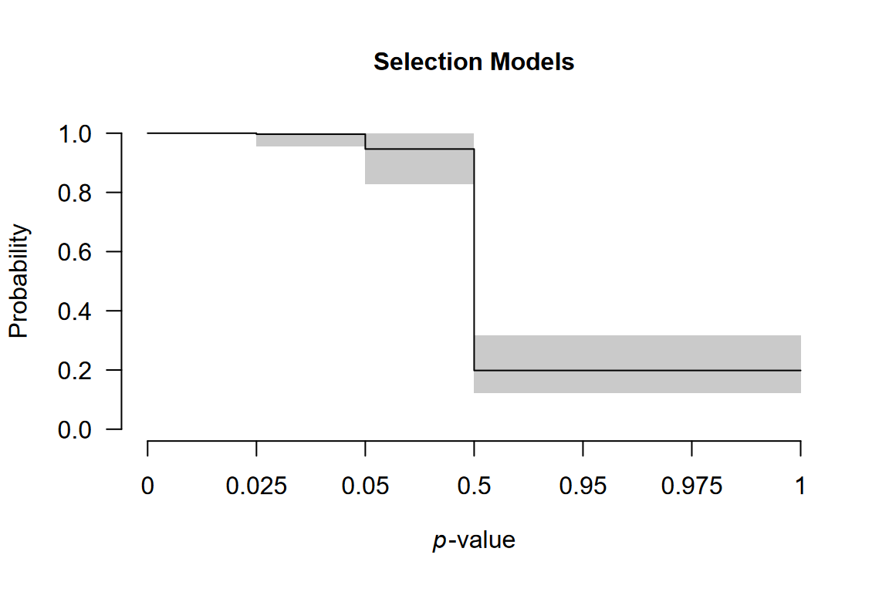

Multilevel Robust Bayesian Meta-Analysis
František Bartoš
2025
Source:vignettes/MultilevelRoBMA.Rmd
MultilevelRoBMA.RmdThis vignette accompanies the manuscript Robust Bayesian Multilevel Meta-Analysis: Adjusting for Publication Bias in the Presence of Dependent Effect Sizes preprinted at PsyArXiv (Bartoš et al., 2025).
This vignette reproduces the first example from the manuscript. For multilevel meta-regression with moderators see Multilevel Robust Bayesian Model-Averaged Meta-Regression.
Multilevel Robust Bayesian Meta-Analysis (RoBMA) extends the standard RoBMA framework to datasets containing multiple effect sizes from the same studies. We demonstrate the method using data from Johnides et al. (2025), who meta-analyzed 412 effect sizes from 128 studies investigating secondary benefits of family-based treatments for childhood disorders.
When to Use Multilevel RoBMA
Multilevel RoBMA is appropriate for dataset that contain multiple
effect sizes from the same studies. The multilevel approach explicitly
models the clustering structure through the study_ids
argument, which:
- accounts for dependencies among effect sizes from the same study,
- partitions heterogeneity into within-study and between-study components,
- while simultaneously adjusting for publication bias at the study level (corresponding to selective reporting).
Loading the Data
We load the package and examine the dataset structure.
The dataset contains effect sizes (d), standard errors
(se), and study identifiers (study).
head(Johnides2025)
#> study d se
#> 1 Price et al. (2012) 0.0000 0.1337909
#> 2 Price et al. (2012) -0.1250 0.1337909
#> 3 Price et al. (2012) 0.0000 0.1337909
#> 4 Price et al. (2012) 0.2112 0.1337909
#> 5 Price et al. (2012) 0.0140 0.1337909
#> 6 Price et al. (2012) -0.0186 0.1337909Multiple rows share the same study name, indicating that these effect sizes come from the same study. For example, the first five effect sizes are from “Price et al. (2012)” and might be more similar to each other than to effect sizes from other studies.
Fitting the Multilevel Model
The study_ids argument specifies which effect sizes
belong together. We use algorithm = "ss" (spike-and-slab),
which is faster for complex models and neccessary for estimating
multilevel selection models. The "ss" algorithm estimates
the models and parameters simultaneously, therefore we increase MCMC
adaptation, iteration, and sampling to obtain more reliable estimates
(we disable automatic convergence checking with
autofit = FALSE to speed up the fitting process here).
fit <- RoBMA(
d = Johnides2025$d,
se = Johnides2025$se,
study_ids = Johnides2025$study,
algorithm = "ss",
adapt = 5000,
burnin = 5000,
sample = 10000,
parallel = TRUE,
seed = 1,
autofit = FALSE
)Note: This model takes 10-15 minutes with parallel processing enabled. Without parallel processing, expect over an hour.
Interpreting the Results
The summary() output contains two main sections.
summary(fit)
#> Call:
#> RoBMA(d = Johnides2025$d, se = Johnides2025$se, study_ids = Johnides2025$study,
#> algorithm = "ss", sample = 10000, burnin = 5000, adapt = 5000,
#> parallel = TRUE, autofit = FALSE, seed = 1)
#>
#> Robust Bayesian meta-analysis
#> Components summary:
#> Prior prob. Post. prob. Inclusion BF
#> Effect 0.500 0.481 0.927
#> Heterogeneity 0.500 1.000 Inf
#> Bias 0.500 1.000 Inf
#> Hierarchical 1.000 1.000 Inf
#>
#> Model-averaged estimates:
#> Mean Median 0.025 0.975
#> mu 0.050 0.000 0.000 0.173
#> tau 0.400 0.400 0.348 0.458
#> rho 0.461 0.464 0.306 0.603
#> omega[0,0.025] 1.000 1.000 1.000 1.000
#> omega[0.025,0.05] 0.997 1.000 0.955 1.000
#> omega[0.05,0.5] 0.946 0.959 0.827 0.998
#> omega[0.5,0.95] 0.198 0.190 0.122 0.317
#> omega[0.95,0.975] 0.198 0.190 0.122 0.317
#> omega[0.975,1] 0.198 0.190 0.122 0.317
#> PET 0.000 0.000 0.000 0.000
#> PEESE 0.000 0.000 0.000 0.000
#> The estimates are summarized on the Cohen's d scale (priors were specified on the Cohen's d scale).
#> (Estimated publication weights omega correspond to one-sided p-values.)
#> ESS 453 is lower than the set target (500).Components Summary
This table shows Bayes factors testing the presence of effect, heterogeneity, and publication bias. Each row displays the prior probability, posterior probability after observing the data, and the inclusion Bayes factor comparing models with versus without that component.
In our example, the inclusion BF for the effect is 0.927, indicating
weak evidence against an effect. The inclusion BF for heterogeneity and
publication bias are reported as Inf, i.e., beyond the
numerical precision of the ss algorithm (> 10⁶),
indicating extreme evidence for both components.
We also notice warning about effective sample size (ESS) below the set target. The difference is however not substantial and we can safely ignore it.
Model-Averaged Estimates
This section provides meta-analytic estimates averaged across all
models, weighted by their posterior probabilities. The average effect
size is mu, overall heterogeneity is tau, and
the heterogeneity allocation parameter rho. The
heterogeneity allocation parameter rho indicates the
proportion of heterogeneity within versus between studies:
rho = 0 means all heterogeneity is between studies,
rho = 1 means all is within studies, and
rho = 0.5 means equal split. The remaining parameters
summarize the weight function and PET/PEESE regression for publication
bias.
In our example, we find small effect size (d = 0.050, 95% CI
[0.000, 0.173]), substantial heterogeneity (τ = 0.40, 95% CI [0.348,
0.458]), and nearly balanced heterogeneity allocation (ρ = 0.461, 95% CI
[0.306, 0.603]). The large heterogeneity combined with the small pooled
effect suggests substantial variation in true effects. This distribution
of true effect sizes can be obtain by the
summary_heterogeneity() function:
summary_heterogeneity(fit)
#> Call:
#> RoBMA(d = Johnides2025$d, se = Johnides2025$se, study_ids = Johnides2025$study,
#> algorithm = "ss", sample = 10000, burnin = 5000, adapt = 5000,
#> parallel = TRUE, autofit = FALSE, seed = 1)
#>
#> Robust Bayesian meta-analysis
#> Model-averaged heterogeneity estimates:
#> Mean Median 0.025 0.975
#> PI 0.050 0.053 -0.752 0.845
#> tau 0.400 0.400 0.348 0.458
#> tau2 0.080 0.080 0.060 0.105
#> I2 85.609 85.720 81.979 88.735
#> H2 7.051 7.003 5.549 8.877
#> The prediction interval (PI) is summarized on the Cohen's d scale.
#> The absolute heterogeneity (tau, tau^2) is summarized on the Cohen's d scale.
#> The relative heterogeneity indicies (I^2 and H^2) were computed on the Fisher's z scale.
#> ESS 453 is lower than the set target (500).The wide prediction interval (d = -0.752 to 0.845) quantifies the degree of this heterogeneity: some studies may show benefits while others show harm.
Model Types Summary
To understand which publication bias mechanisms the data support, we examine the posterior distribution across model types:
summary(fit, type = "models")
#> Call:
#> RoBMA(d = Johnides2025$d, se = Johnides2025$se, study_ids = Johnides2025$study,
#> algorithm = "ss", sample = 10000, burnin = 5000, adapt = 5000,
#> parallel = TRUE, autofit = FALSE, seed = 1)
#>
#> Robust Bayesian meta-analysis
#> Publication bias adjustment summary:
#> Prior prob. Post. prob. Inclusion BF
#> None 0.500 0.000 0.000
#> Weight functions 0.250 1.000 Inf
#> PET-PEESE 0.250 0.000 0.000
#>
#> Publication bias adjustment models summary:
#> Prior prob. Post. prob. Inclusion BF
#> None 0.500 0.000 0.000
#> Weight function[two-sided: .05] 0.042 0.000 0.000
#> Weight function[two-sided: .1, .05] 0.042 0.000 0.000
#> Weight function[one-sided: .05] 0.042 0.000 0.000
#> Weight function[one-sided: .05, .025] 0.042 0.000 0.000
#> Weight function[one-sided: .5, .05] 0.042 0.903 214.358
#> Weight function[one-sided: .5, .05, .025] 0.042 0.097 2.468
#> PET 0.125 0.000 0.000
#> PEESE 0.125 0.000 0.000Most (all) posterior probability is allocated to selection models (weight functions). The publication bias adjustment therefore reflects selective reporting rather than small study effects (PET/PEESE regression), specifically, one-sided selection operating on marginally significant -values and direction of the effect.
Visualizing the Weight Function
The weight function shows how publication probability varies across p-value ranges:
plot(fit, parameter = "weightfunction", rescale_x = TRUE)
The plot displays one-sided p-value cutoffs (x-axis) against relative publication probability (y-axis), averaged across weight function specifications. A flat line at 1.0 indicates no publication bias; values below 1.0 indicate suppression.
In our example, we notice a small drop in the relative publication probability at cutoff corresponding to p = 0.05 (one-sided, i.e., 0.10 two-sided: selection on marginally significant -values) and a much sharper drop corresponding to the direction of the effect (p = 0.50).
Comparison with Single-Level RoBMA
To understand the importance of accounting for nested structure, we compare our results with a standard single-level RoBMA that ignores dependencies among effect sizes from the same study.
fit_simple <- RoBMA(
d = Johnides2025$d,
se = Johnides2025$se,
algorithm = "ss",
adapt = 5000,
burnin = 5000,
sample = 10000,
parallel = TRUE,
seed = 1,
autofit = FALSE
)
summary(fit_simple)
#> Call:
#> RoBMA(d = Johnides2025$d, se = Johnides2025$se, algorithm = "ss",
#> sample = 10000, burnin = 5000, adapt = 5000, parallel = TRUE,
#> autofit = FALSE, seed = 1)
#>
#> Robust Bayesian meta-analysis
#> Components summary:
#> Prior prob. Post. prob. Inclusion BF
#> Effect 0.500 0.042 0.044
#> Heterogeneity 0.500 1.000 Inf
#> Bias 0.500 1.000 Inf
#>
#> Model-averaged estimates:
#> Mean Median 0.025 0.975
#> mu 0.001 0.000 0.000 0.005
#> tau 0.374 0.373 0.339 0.411
#> omega[0,0.025] 1.000 1.000 1.000 1.000
#> omega[0.025,0.05] 0.997 1.000 0.963 1.000
#> omega[0.05,0.5] 0.955 0.965 0.853 0.999
#> omega[0.5,0.95] 0.222 0.220 0.168 0.286
#> omega[0.95,0.975] 0.222 0.220 0.168 0.286
#> omega[0.975,1] 0.222 0.220 0.168 0.286
#> PET 0.000 0.000 0.000 0.000
#> PEESE 0.000 0.000 0.000 0.000
#> The estimates are summarized on the Cohen's d scale (priors were specified on the Cohen's d scale).
#> (Estimated publication weights omega correspond to one-sided p-values.)The single-level model differs by:
- omitting
study_ids: it treats all effect sizes as independent, - estimating only one heterogeneity parameter: it cannot distinguish within-study from between-study variation,
- potentially biased inference: ignoring dependencies can lead to overconfident conclusions.
For the Johnides et al. data, the single-level RoBMA finds strong evidence for the absence of an effect, while the multilevel model provides only weak evidence against it. Properly accounting for data structure leads to more conservative and appropriate inferences.